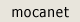
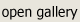
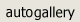

Holly Ahlberg
"35 years in advertising photography for national clients, now retired, having fun on the computer.
Have shown in many galleries here in Sedona and other cities.
The feeling you get when you know something is not quite right expresses the inner self and the shadow realms many ignore in the human being."